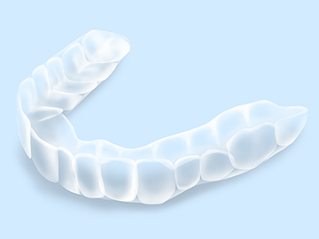

きれいな歯を手に入れる～審美歯科・ホワイトニング～

千歳船橋駅から徒歩3分にある歯医者「中村歯科医院」では、審美歯科やホワイトニングを行っています。歯を白く美しくする審美歯科治療で、口元のお悩みを解決するお手伝いをいたします。結婚式や成人式、就職活動などのライフイベントが控えているなら、削らずに歯を白くするホワイトニングもおすすめです。
歯の色でお悩みではありませんか？～審美歯科・ホワイトニング～
昔の治療痕の銀歯が気になったり、全体的に歯が黄ばんだりしている場合は、口元を見られるのに抵抗を持ってしまいがち。口腔内の悩みを「美しくする」観点から解決するのが、審美歯科やホワイトニングです。口元をきれいにすることで、笑顔に自信が持てるようになり、性格が明るく前向きになったという患者様も大勢いらっしゃいます。
審美歯科治療とは
保険適用の歯科治療では金属製の被せ物（いわゆる銀歯）が多く使われていましたが、大きく口を開けると目立ってしまうので、不満に感じている人も多くいます。また、金属の被せ物が溶けだして歯ぐきを黒く変色させる「メタルタトゥー」や、金属アレルギーの原因になるなど、近年では歯科治療に使われることが問題視されるようになりました。
審美歯科治療では、金属製の被せ物をセラミック（陶器）製のものと取り替えることにより、天然歯に近い自然な白さに見せることができます。セラミックを使用すれば金属アレルギーの心配がなく、強度も高いため長く使い続けることができます。
当院の審美歯科メニュー
オールセラミック（詰め物・被せ物）
詰め物や被せ物に金属を使わず、セラミックのみで作製するため、金属アレルギーの心配がありません。天然歯とそん色ない白さがあり、経年による変色が起こりにくい素材です。ただし、歯ぎしりなどの癖があると、まれに欠けてしまうことがあります。
ハイブリッドセラミック（詰め物・被せ物）
セラミックとレジン（歯科用プラスチック）を混ぜ合わせた素材です。セラミックの硬さとレジンの柔軟性を兼ね備えており、十分な強度があり、欠けにくいのが特徴です。
メタルボンド（被せ物）
金属製のフレームにセラミックを焼き付けたもので、耐久性が高いため奥歯の被せ物として使われます。安価につくることができますが、オールセラミックやハイブリッドセラミックと比べると色味では劣ります。また、金属を使用しているので金属アレルギーやメタルタトゥーを発症するリスクがあります。
ラミネートベニア
歯の表面を薄く削り、セラミックでできた板を貼り付ける治療です。歯の形を整える際や、すきっ歯の改善に用います。ホワイトニングでは効果が期待できないほど変色した歯でも、ラミネートベニアなら白くすることができます。
ファイバーコア
被せ物に使う土台（コア）は金属を用いることが多いですが、被せ物が濁って見えたり、金属アレルギーの原因になったりするという欠点がありました。ファイバーコアは素材に白い樹脂を使っており、セラミック製の被せ物の白さを損ねません。
e-max
歯科治療に合わせて開発されたオールセラミック素材で、従来の素材と比べて4倍の強度と、壊れにくい特性を持ちます。色味や透明感の面でも天然歯を再現しており、本物の歯の中に並んでも違和感がありません。変色しにくい点も特徴です。
コスメティック形態調整
歯の形はその人の印象に大きく関係しています。当院ではコスメティック形態調整を行っています。尖った八重歯や長さが不揃いな前歯など、歯の形でお悩みの方はご相談ください。
ルーペを使った審美歯科治療
審美歯科では歯を美しく見せるだけではなく、歯の機能性も十分に回復させられる治療です。
精度の高い治療が求められますが、当院ではルーペを審美歯科治療にも導入。被せ物が天然歯と馴染んでいるかどうかを、肉眼では捉えきれない細部にいたるまで確認いたします。また、審美歯科の治療痕を再治療しないためにも、精度の高い治療に努めています。
歯を内側から白くするホワイトニング
ブラッシングによって汚れを落とせるのは表面だけ。歯を内側から白くするためには、ホワイトニングが効果的です。歯の内部にある象牙質は年齢とともに黄色く変色し、歯の表面のエナメル質から透けて黄ばんで見えるようになります。ホワイトニングを行うことでエナメル質を白くし、象牙質が透けて見えにくくなります。経年による歯の黄ばみや食べ物による着色汚れに対しても、定期的なホワイトニングで美しい白さを保つことができるのです。
当院では患者様一人ひとりに合わせたホワイトニングをご提案いたします。営業職やサービス業など人と接する仕事の方や、結婚式、成人式などのライフイベントを控えている方など、患者様の目的と状況を考慮して処置を進めて行きます。
当院のホワイトニングメニュー
当院では歯科医院で行う「オフィスホワイトニング」と、自宅で行える「ホームホワイトニング」の2種類があります。また、両方を併用する「デュアルホワイトニング」を行うことで、より効果的に歯を白くできます。
オフィスホワイトニング
| 処置内容 | |
|---|---|
| 歯科医院で行うホワイトニングです。最初に口腔内のクリーニングを行い、プラークや歯石を除去します。専用のホワイトニング薬剤を歯の表面に塗布し、光を照射して漂白します。特定の歯や一部の歯だけを白くしたい場合や、即効性を求める場合に適しています。 | |
| メリット | デメリット |
| 短期間で歯を白くできる | 色が元にもどやすい |
| 1.カウンセリング | 2.クリーニング | 3.保護材の塗布 | 4.ホワイトニング剤の塗布 | 5.歯に光を当てて完了 |
|---|
※表は左右にスクロールして確認することができます。
ホームホワイトニング
| 処置内容 | |
|---|---|
| 自宅で行うホワイトニングです。来院時に作製した専用のマウスピースにホワイトニング薬剤を注入し、口に装着して数時間そのままにすることで、歯を白くします。白さを実感するまでに期間がかかりますが、すべての歯をしっかりと漂白できます。 | |
| メリット | デメリット |
| 色が戻りにくく、効果が長持ちする | 効果があらわれるまで時間がかかる |
|  | |||
| 1.マウストレー作成 | 2.ホワイトニング剤の挿入 | 3.装着 | 4.ブラッシング |
|---|
※表は左右にスクロールして確認することができます。
デュアルホワイトニング
| 処置内容 | |
|---|---|
| オフィスとホームを併用する方法。短期間で効果を発揮し、効果が持続するなど双方のメリットを得られます。歯の着色が強い人におすすめです。 | |
| メリット | デメリット |
| 短期間で歯を白くできる 効果が長続きする |
少し費用がかかる |
ホワイトニングの注意点
ホワイトニングの効果には個人差があり、歯が期待通りに白くなるまでの時間や施術回数は人によって異なります。また、差し歯などの人工歯や神経を抜いた歯には効果を得られません。
また、ホワイトニングの前には必ず口腔内の検診を行い、むし歯や歯周病が見つかった場合は治療を優先します。ホワイトニングの治療中には知覚過敏など、歯がしみることもあるので、あらかじめご了承ください。